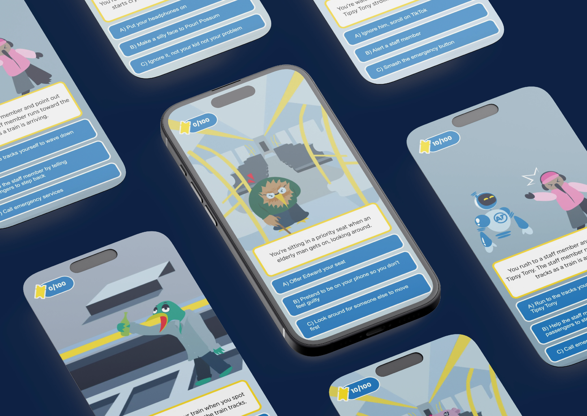
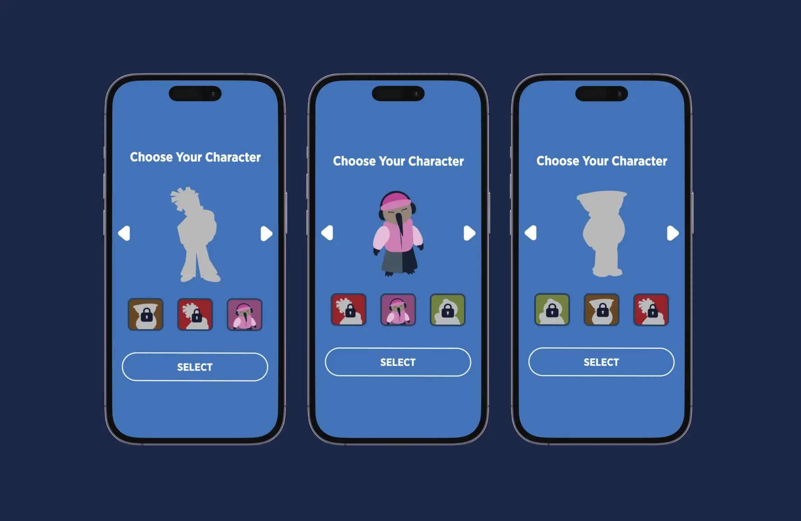
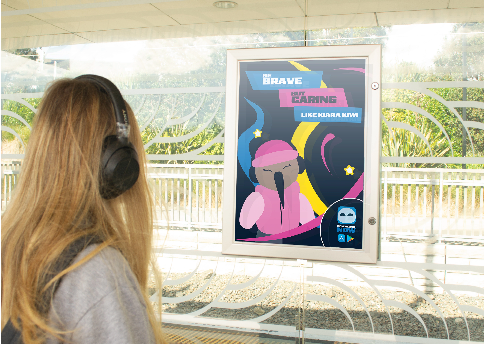

Case Study
Metro Mission
Mobile choice game to encourage safer public transport journeys.
Team ProjectMy Roles
- Project Manager
- User Research
- UX Design
- Prototyping
- App Development

Mobile choice game to encourage safer public transport journeys.
Team Project
To explore how Auckland Transport could help people feel safer and be safer on public transport, while encouraging more positive behaviour among passengers.
Passengers often feel unsafe on public transport due to negative behaviour, particularly from teens. While those actions are not always physically threatening, they create an environment that makes people feel unsafe. A key issue is the lack of clearly communicated behavioural expectations across public transport.
As the research lead, I conducted a survey on public transport behaviour. Asking who is disruptive, what actions are most common, and if there should be more education.

Commuters feel teens are the most disruptive and think there should be more education around behaviour.
Survey results identified teens as the most disruptive, but secondary research shifted our focus to intermediate-aged students to build positive behaviour before habits form.

Younger audiences are more receptive to behaviour change. Catch the issue before it arises.
As a team, we explored several solution directions, including a noise meter, before deciding on a choice-based mobile game as the final concept.

Games make learning feel rewarding. Kids already spend time on phones/tablets.
I mapped out a user flow outlining the gameplay journey, from choosing a character to answering questions and earning points to unlock characters.

Working through game logic and core mechanics. Mapping level content, text, visuals, and overall game flow before developing high-fidelity screens.

Through work-in-progress sessions with the client and user testing, we gathered feedback on the game flow and incorporated insights into each iteration.

We made refinements before I developed the final app using HTML, CSS, and JavaScript, bringing the game to life with character selection, branching scenarios, a point system, and character unlocking.

A mobile, choice-based game that guides users through real-world scenarios, rewarding positive decisions to encourage better social behaviour on public transport.



People want to help, but need clarity and trust.
Small actions, made easy, create big impact.
Design can drive empathy and behaviour change.
Games make learning feel rewarding, not preachy.